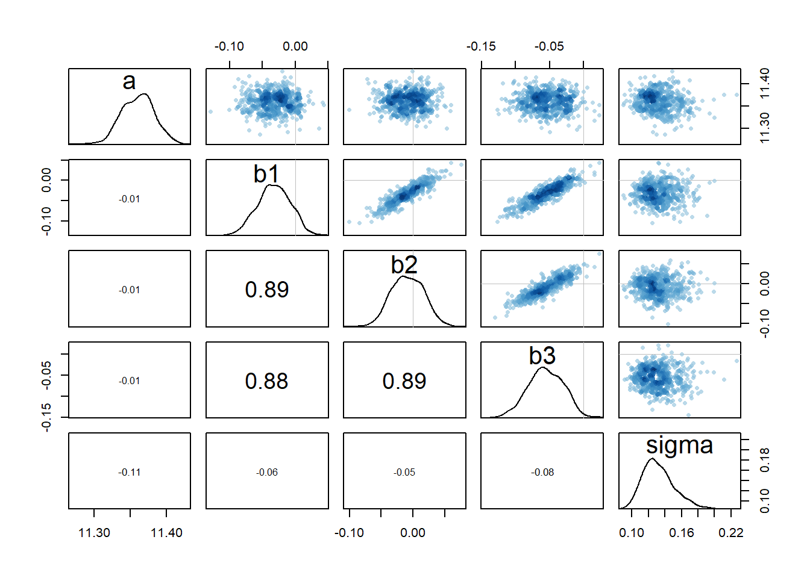
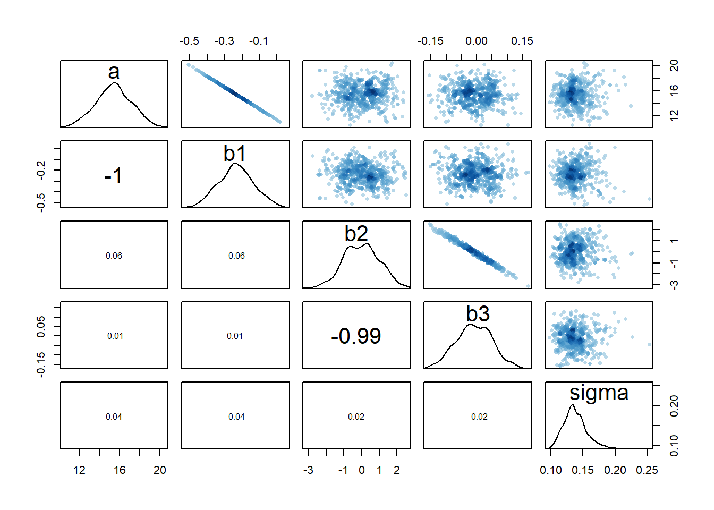

Load all required packages.
Import the Model 1 Dataset.
# read files
data1 = read.csv(file.path("datasets", "M1.data.new.csv"))Step 1 : Preprocess all variables to its correct numeric values.
Step 2 : Make log version of outcome to examine the magnitude of such.
Step 3 : Center predictors for better inference.
Step 4 : Also, for better efficiency and to avoid common problems later on in Stan, we make a new trimmed down data frame.
# factor to numeric
data1$crime_cases = as.numeric(as.character(data1$Total_cases_Number))
# fix NAs
data1[1,"crime_cases"] = 115879
# make log version of outcome
data1$log_crime = log(data1$crime_cases)
# construct centered predictor
data1$Bx1_c<- data1$Bx1 - mean(data1$Bx1)
data1$Bx2_c<- data1$Bx2 - mean(data1$Bx2)
data1$Bx3_c<- data1$Bx3 - mean(data1$Bx3)
# trim data frame
d1 = data1[ , c("log_crime","Bx1_c","Bx2_c","Bx3_c")]Fit the model using quadratic approximation (map).
# define model fit by map
m1 <- map(
alist(
log_crime ~ dnorm(mu, sigma),
mu <- a +b1*Bx1_c + b2*Bx2_c + b3*Bx3_c,
a ~ dnorm(11,100),
b1 ~ dnorm(0,1),
b2 ~ dnorm(0,1),
b3 ~ dnorm(0,1),
sigma ~ dunif(0,10)
),
data <- d1)Fit the model using Hamiltonian Monte Carlo (map2stan).
# define model fit by map2stan
m1.stan <- map2stan(
alist(
log_crime ~ dnorm(mu, sigma),
mu <- a +b1*Bx1_c + b2*Bx2_c + b3*Bx3_c,
a ~ dnorm(11,100),
b1 ~ dnorm(0,1),
b2 ~ dnorm(0,1),
b3 ~ dnorm(0,1),
sigma ~ dcauchy(0,2)
),
data <- d1)Compare map to map2stan to check the quadratic approximation. From the table of coefficients, we can see that the numbers are approximately the same.
coeftab(m1, m1.stan)## m1 m1.stan
## a 11.36 11.36
## b1 -0.03 -0.03
## b2 -0.01 -0.01
## b3 -0.06 -0.06
## sigma 0.12 0.13
## nobs 32 32For the Stan model and these data, the resulting posterior distribution is quite nearly multivariate Gaussian. The density for sigma is certainly skewed in a certain direction, but otherwise the quadratic approximation does almost as well as Hamiltonian Monte Carlo. Since the quadratic approximation turned out to be okay, we can continue to use map estimates.
However, there remain strong correlations between multiple parameters (b1, b2, and b3, specifically) even though we centered the predictors prior to fitting. This needs to be taken into consideration when examining the model.
pairs(m1.stan)
Import the Model 2 Dataset.
# read files
data2 = read.csv(file.path("datasets", "M2.data.new.csv"))Step 1 : Preprocess all variables to its correct numeric values.
Step 2 : Make log version of outcome to examine the magnitude of such.
Step 3 : For better efficiency and to avoid common problems later on in Stan, we make a new trimmed down data frame.
# factor to numeric
data2$crime_cases = as.numeric(as.character(data2$Total_cases_Number))
# fix NAs
data2[1,"crime_cases"] = 115879
# make log version of outcome
data2$log_crime = log(data2$crime_cases)
# trim data frame
d2 = data2[ , c("log_crime","log_box_office","score.s","Bscore.s")]Fit the model using quadratic approximation (map).
# define model fit by map
m2 <- map(
alist(
log_crime ~ dnorm(mu, sigma),
mu <- a +b1*log_box_office + b2*score.s + b3*Bscore.s,
a ~ dnorm(11,100),
b1 ~ dnorm(0,1),
b2 ~ dnorm(0,1),
b3 ~ dnorm(0,1),
sigma ~ dunif(0,10)
),
data <- d2)Fit the model using Hamiltonian Monte Carlo (map2stan).
# define model fit by map2stan
m2.stan <- map2stan(
alist(
log_crime ~ dnorm(mu, sigma),
mu <- a +b1*log_box_office + b2*score.s + b3*Bscore.s,
a ~ dnorm(11,100),
b1 ~ dnorm(0,1),
b2 ~ dnorm(0,1),
b3 ~ dnorm(0,1),
sigma ~ dcauchy(0,2)
),
data <- d2)Compare map to map2stan to check the quadratic approximation. From the table of coefficients, we can see that the numbers are approximately the same.
coeftab(m2, m2.stan)## m2 m2.stan
## a 15.43 15.42
## b1 -0.24 -0.23
## b2 -0.09 -0.01
## b3 0.00 -0.01
## sigma 0.13 0.14
## nobs 32 32For the Stan model and these data, the resulting posterior distribution is quite nearly multivariate Gaussian. The density for sigma is quite skewed in a certain direction, but otherwise the quadratic approximation does almost as well as Hamiltonian Monte Carlo. Since the quadratic approximation turned out to be okay, we can continue to use map estimates.
However, there remain strong correlations between multiple parameters (a and b1, b2 and b3, specifically) even though we standardized the predictors prior to fitting. This needs to be taken into consideration when examining the model.
pairs(m2.stan)